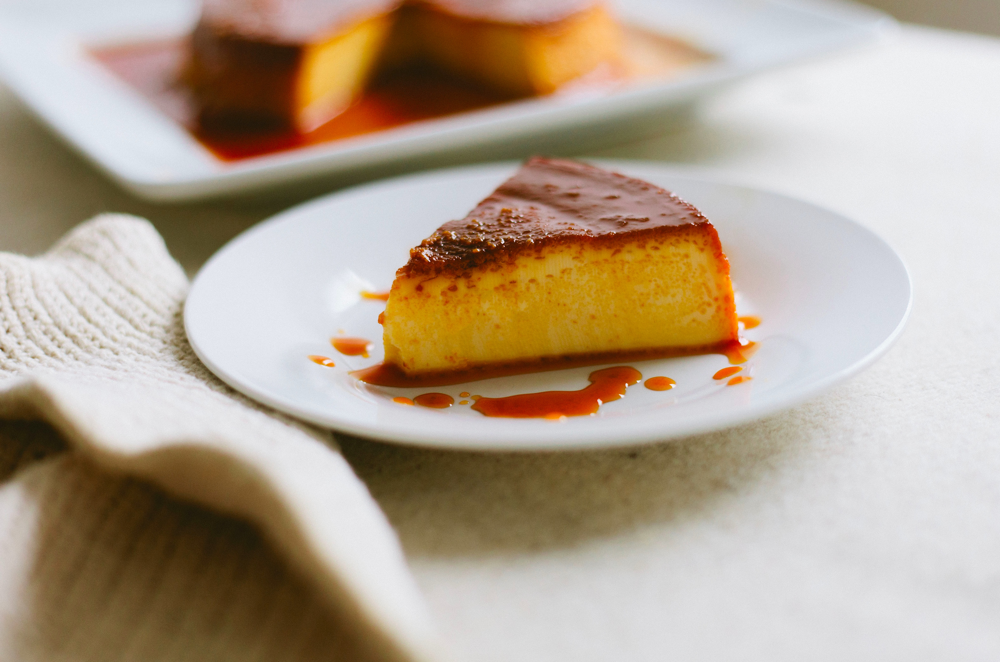
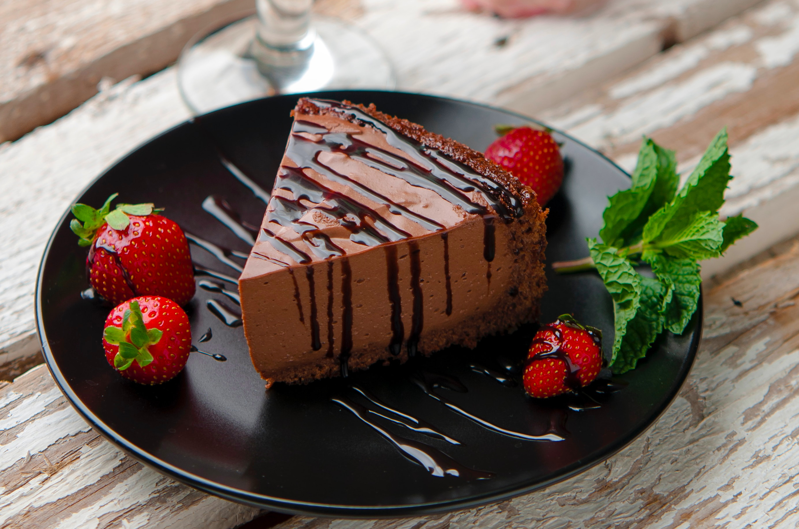
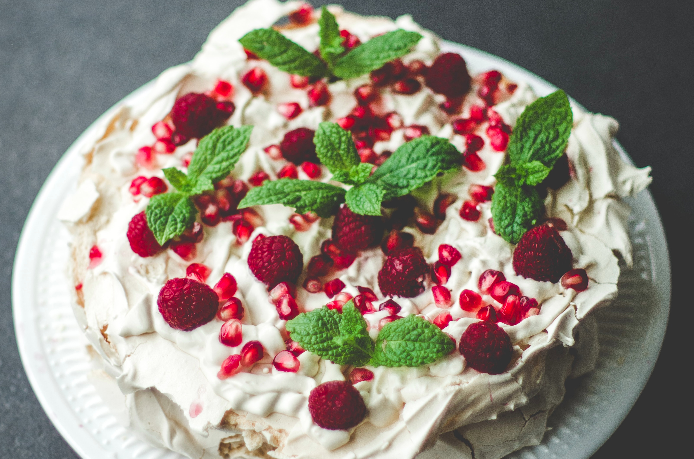

Caramel Custard
Serves 4 | Prep time 45 minutes | Cook time 40 minutes (plus chilling)

Ingredients
Caramel
¼ cup (55g, 2oz) caster sugar
2 tbsp cold water
1 tbsp hot water
Custard
3 eggs
¼ cup (55g, 2oz) caster sugar
1⅓ cups (350ml, 12fl oz) milk
½ tsp vanilla extract
⅓ cup (100ml, 3½ fl oz) whipping cream
Sponge Cake
2 eggs
¼ cup (55g, 2oz) sugar
⅓ cup (40g, 1½ oz) plain flour
pinch of salt
¼ cup (30ml, 1fl oz) whipping cream, warmed
Method
- Preheat the oven to 170oC (340oF, Gas Mark 4). Grease 4 individual ramekins. You can do this by rubbing the sides in vegetable oil or butter with a paper towel or a pastry brush.
- To make the caramel, put the sugar and cold water into a small saucepan over a medium heat. Leave it undisturbed until it starts to bubble and the sugar starts to melt. Reduce to a low heat and stir occasionally to prevent the sugar from burning. Once the sugar has dissolved and the syrup is brown, add hot water and pour immediately into the ramekins.
- To make the custard, combine all the custard ingredients together in a medium bowl and mix until smooth. Pour the custard into the ramekins.
- To make the sponge cake, beat the eggs lightly and then gradually add the sugar until the mixture thickens enough to form ribbons when dropped off a spoon. Sift the flour and salt into the mixture with a large mesh sieve, and fold to combine. You can do this with a wooden or rubber spatula by cutting through the mixture several times. Then scrape the bottom of the bowl and 'flip over' the mixture and repeat.
- Combine about ¼ cup (60ml, 2fl oz) of the batter with the warm whipping cream in a separate bowl and gently whisk together. Then pour it into the rest of the batter and fold everything together until a smooth and thick batter is formed. Pour the cake batter into the ramekins.
- Place the ramekins into a deep baking dish and fill up the large dish with hot water until it reaches ¾ of the way to the top of the ramekins. This type of water bath is called a bain marie and it helps food to bake evenly.
- Bake for 40 minutes or until the sponge cakes spring up when pressed lightly. Remove the ramekins from the oven and allow to cool completely before refrigerating them for 4 hours.
- To serve, run a knife around the edges of the cake and turn them upside down on serving plates so that the cake is at the bottom and the caramel is at the top.
Chocolate Cheesecake
|
Pavlova
|
Back to Top
Chocolate Cheesecake
Serves 12 | Prep time 40 minutes | Cook time 1 hour (plus chilling)

Ingredients
Base
160g (6oz) butter
1 x 250g (9oz) packet of plain chocolate biscuits, broken into pieces
½ tsp ground cinnamon
Filling
270g (9oz) dark chocolate, chopped finely
120g (4oz) butter
¾ cup (165g, 6oz) caster sugar
3 eggs
750g (1½ lb) cream cheese, room temperature
2 tbsp cocoa powder
1 tsp vanilla extract
2½ cups (600ml, 20fl oz) sour cream
cocoa powder, to serve
Method
- Preheat the oven to 160oC (320oF, Gas Mark 3). Line a 24cm (9½ inch) round springform tin with greaseproof paper.
- To make the base, place the chocolate biscuits in a zip-lock bag and crush finely with a rolling pin until it resembles breadcrumbs. Alternatively, you can process them in a food processor.
- Melt the butter in a microwave in short bursts of 20 seconds, or in a small saucepan over a low heat. Combine all the base ingredients together in a bowl, then pour it into the prepared tin. Press down the biscuit mix with a rubber spatula or the back of a spoon firmly and evenly. Place the tin in the fridge to chill for 30 minutes.
- In a heatproof bowl such as glass, combine the chopped chocolate and butter and set the bowl over a saucepan of simmering water to create a double boiler. It is important that the bottom of the bowl does not touch the water when melting the chocolate. Stir for 5 minutes or until just melted and set aside ¼ cup (60ml, 2fl oz) of the chocolate sauce to decorate the cheesecake later.
- To make the filling, beat the sugar and eggs together in a large bowl with an electric mixer until it is light and fluffy. Add the cream cheese and beat well. Then add the chocolate sauce, cocoa powder and vanilla extract and fold lightly to combine. You can do this with a wooden or rubber spatula by cutting through the mixture several times. Then scrape the bottom of the bowl and 'flip over' the mixture and repeat. Finally add the sour cream and stir until combined.
- Take out the biscuit base and pour the cream cheese filling over the top and smooth it out with the spatula. Bake the cheesecake for 1 hour or until the centre is firm. Once the cake is done, turn the oven off but leave it in the oven with the door ajar for about 2 hours or until cooled completely.
- Remove the cheesecake from the oven and cover it with plastic wrap. Let it chill in the fridge for a further 2 hours. To serve, drizzle with the reserved chocolate sauce and dust it with extra cocoa powder.
Caramel Custard
|
Pavlova
|
Back to Top
Pavlova
Serves 10 | Prep time 20 minutes | Cook time 1 hour 30 minutes

Ingredients
4 egg whites
1¼ cup (275g, 10oz) caster sugar, sifted
½ tsp white vinegar or lemon juice
1 tbsp cornflour
2 cups (500ml, 1pt) whipped cream
2 cups (250g, 8oz) mixed berries, fresh or thawed
Method
- Preheat the oven to 200oC (390oF, Gas Mark 6). Line a baking tray with greaseproof paper.
- Beat the egg whites with an electric mixer on a medium setting until soft peaks form. Turn the mixer on high and slowly add the caster sugar and continue beating until the sugar dissolves. The meringue should have stiff peaks and a glossy texture.
- Reduce the mixer back to a medium speed and add the vinegar or lemon juice. Continue beating for a further 10 seconds then turn off the mixer.
- Sift the cornflour into the meringue with a large mesh sieve and fold lightly to combine. You can do this with a wooden or rubber spatula by cutting through the mixture several times. Then scrape the bottom of the bowl and 'flip over' the mixture and repeat.
- Spoon or pipe the meringue onto the prepared baking tray and place it in the middle of the oven. Then turn the temperature of the oven down to 120oC (250oF, Gas Mark ½). Bake for 1 hour 30 minutes and periodically check during the last 15 minutes of baking that it has not browned. The pavlova should have a firm outer shell and a soft marshmallowy texture inside.
- Let it cool completely before topping with whipped cream and berries to serve.
Caramel Custard
|
Chocolate Cheesecake
|
Back to Top